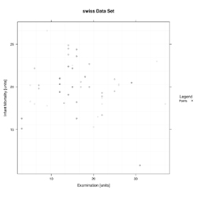

Y~Y Plot
Lattice Version (No Bar Charts)
Uses

- To display "Y~Y Plot" plots
Notes
- Uses the Variations in its panel, just like the Box, Quantile, and Scatter Plots
- All Data being plotted must satisfy all requirement within the 'Data Sets' tab to work properly
- Can not include histograms
- MORE NOTES
Common Examples
Base Code for All Y~Y Plot Examples
Please see the Points example